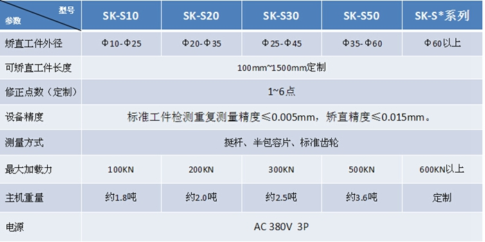
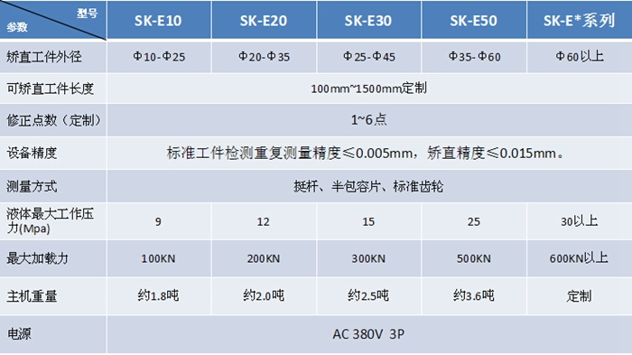
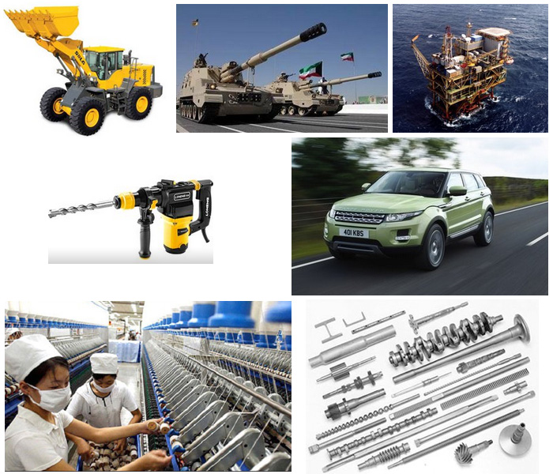

发布时间：2018-04-12 点击量：681
Straightener®无按键安全启动技术NB
在校直机自动运行过程中，任何物体进入设备危险区域都可能导致伤害，为了避免该类现象发生，Straightener®自动校直机加入了数十项的安全互锁及防护装置。启动设备运转时，我们同样需要考虑操作者的安全问题，同时兼顾执行效率。
在国内，上一代自动校直机产品通常采用“双手按钮”启动的方式来规避安全风险，但在执行效率方面，每根工件矫直过程中不可避免的增加了操作启动按钮的时间，至少1.5～2秒钟/次。
Straightener®的“无按键启动”功能可以控制矫直系统在操作者将工件放置到位，手臂撤离危险区域后自动启动设备矫直流程，从而在每一个工件矫直过程中都减少一次双手按钮启动的附加动作，每天累计可减少约1000次弯腰及双手按下启动按钮的动作，从很大程度上降低操作者工作强度；以每次节约1.5秒钟的时间计算，每天可以减少工人25分钟的劳动时间或增加50～100根工件的矫直产量。
Straightener®矫正曲线BCC
Straightener®运用矫直行程自动计算功能与矫直曲线BCC技术的结合，可以更加的完成矫直流程。
Straightener®自动校直机产品型号与参数
标准机械式校直机参数表
标准液压式校直机参数表
Straightener®自动校直机应用领域
自动校直机产品广泛应用于汽车、工程机械、石油钻探、军工、纺织、电动工具、农用机械、电机等相关领域。
